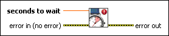

High Resolution Polling Wait VI
Owning Palette: Timing VIs and Functions
Requires: Base Development System
Waits the specified number of seconds with higher resolution than you can obtain with the Wait (ms) function. For example, use this VI in applications that require waiting with sub-millisecond resolution between steps. The resolution of the timer this VI uses varies with different operating systems and CPU types.
Unlike the Wait (ms) function, if the number of seconds you specify is 0, this VI does not force the current thread to yield control of the CPU. Use this VI with caution if you are concerned about high CPU loads: this VI may use polling to achieve high timing resolution for all or a portion of the wait time.

 Add to the block diagram Add to the block diagram |
 Find on the palette Find on the palette |